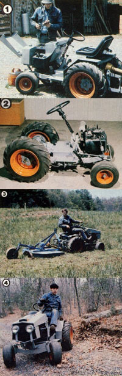

[1] The sheet-metal hood tilts forward for easy refueling and maintenance. the battery is housed under the hinged seat platform. [2] The bare-bones tractor minus its body components. Our unit's steering system is from a VW beetle. [3] Even though this bush hog is actually too large for MOTHER's tractor, the ""team"" cuts well on level ground. [4] Stepped-down gearing, 17 horsepower, and a short wheel-base combine to make the compact workhorse both powerful and maneuverable.